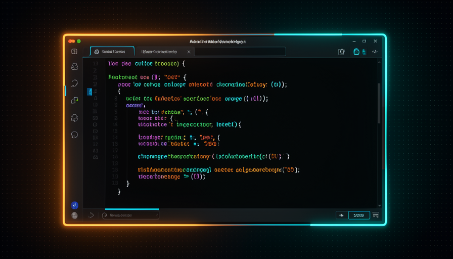
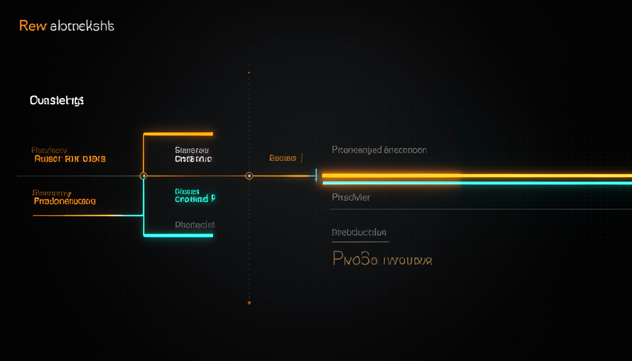

📖 Glossário vivo (leia antes — volte sempre que precisar)
Aqui você revisa o trabalho que o agente fez sozinho (AFK, GitHub Actions, filas). Estes são os termos novos deste módulo — fixe-os:
🔍 O que o review te dá
🧠 Imagine assim: você é o editor de um jornal. Ler o texto do repórter antes de publicar não serve só pra "pegar erro" — serve também pra você entender como aquele repórter pensa, onde ele costuma escorregar, e como melhorar a próxima pauta. O review tem duas funções, não uma.
Quando o agente trabalha sozinho — em AFK, em PRs, em filas de tarefas — sobra uma pergunta: pra que serve o review? Matt Pocock dá uma resposta dupla. A primeira função é óbvia: o review é um portão (gate) de coisas perigosas — vazamento de segredos, brechas de segurança, mudanças que poderiam, por exemplo, expor o código-fonte do próprio Claude Code. Aqui o review é uma barreira de proteção, e ela importa.
Mas tem uma segunda função que quase todo mundo perde — e Pocock insiste nela: o review te dá insight no seu próprio sistema. Ao ver o agente trabalhar, você descobre como o seu harness (o encanamento que produz o código) se comporta na prática. É observabilidade: você melhora o harness com o tempo, e pra isso precisa ver o que está acontecendo. Nas palavras dele: "estamos revisando não só o código, mas o sistema que produz o código." O erro comum é tratar review só como caça-bugs e, ansioso por velocidade, cortar tudo — você ganha tempo e fica cego. Sem observabilidade, você delega às cegas e nunca afina o motor que produz tudo.
O review não é só caça-bugs: é também a sua janela pra entender e afinar o sistema que produz o código.

⚠️ Erro comum de iniciante
Querer "automatizar tudo" e desligar o review já no dia 1. Você até ganha velocidade — mas fica cego ao seu próprio sistema e não sabe por onde melhorá-lo. Comece revisando bastante; corte checkpoints aos poucos, à medida que ganha confiança.
Em 1 frase: o review é um portão (barra o perigoso) e uma janela (te mostra o sistema) — não jogue a janela fora.
Indo mais fundo (opcional): por que "vazar o código-fonte do Claude Code"?
Quando o agente roda dentro do seu ambiente, ele tem acesso a arquivos sensíveis — chaves de API, segredos de produção e, em alguns setups, partes do próprio harness. Um PR mal revisado poderia, por descuido, colar um segredo num arquivo público ou abrir uma brecha. Por isso o portão de segurança é o checkpoint que você corta por último: o custo de um erro aqui é alto demais.
➡️ Empurrar o checkpoint pra direita
🧠 Imagine assim: uma esteira de fábrica. Antes, um inspetor parava CADA peça pra checar. Caro e lento. A solução não foi remover o inspetor — foi movê-lo pro fim da esteira, onde ele confere o produto pronto. A peça flui; o controle acontece o mais perto possível da saída.
Imagine a linha do tempo de uma tarefa: telemetria detecta um bug → vira uma issue → o agente investiga → propõe o conserto → abre o PR → entra no código (merge). Em cada seta dessas você poderia colocar um checkpoint humano. A pergunta de Pocock é: onde ele rende mais? A resposta é a frase-chave da trilha: "push human-in-the-loop checkpoints further toward the final output" — empurre os pontos de aprovação humana cada vez mais pra direita, em direção à saída final.
Por quê? Porque um checkpoint no começo trava todo o resto: nada anda sem você. Quanto mais tarde o checkpoint, mais trabalho a IA já adiantou sozinha quando chega até você — e mais cada minuto seu rende. O gargalo deixa de ser você. O erro comum é o oposto: gente que revisa cada micro-passo (cada comando, cada arquivo) e, sem perceber, reconstrói o trabalho manual que queria delegar. Lembre da fila do módulo 4.4: você é o rei que prioriza e aprova o resultado — não o soldado que checa cada movimento.
Recuperação rápida: "empurrar o checkpoint pra direita" significa…
Em 1 frase: empurre seus checkpoints pra direita (perto da saída) pra deixar de ser o gargalo — sem deixar de aprovar o resultado.
✂️ Quando remover o humano
🧠 Imagine assim: trocar a marca do café na copa da empresa não precisa passar pelo CEO. Mudar a política de demissões, precisa. O segredo é casar o nível de aprovação com o tamanho do risco — não checar tudo igual.
O objetivo, diz Pocock, é remover checkpoints onde der — com cuidado. Nem toda mudança merece o mesmo escrutínio. O exemplo dele é claro: um PR que é só uma refatoração interna — reorganiza o código, mas não muda o comportamento visível — é candidato natural a ter o checkpoint removido. A própria IA pode avaliar e dizer: "isto não precisa de revisão humana, é só limpeza interna."
A regra prática é classificar pelo raio de impacto. Baixo risco (refactor que não muda comportamento, ajuste de texto, atualização de dependência segura) → bom candidato a auto-merge. Alto risco (qualquer coisa que toque segurança, dados de usuário, dinheiro, ou mude comportamento que o cliente vê) → mantenha o humano. O erro comum é binário: ou revisar tudo (gargalo) ou nada (perigoso). O caminho é o gradiente: comece revisando muito e vá soltando os de baixo risco conforme ganha confiança no sistema. Isso conecta com o módulo 4.5 (telemetria → issue → fix → tag auto-merge ou pinga o humano): a decisão "auto-merge ou humano" é exatamente este julgamento de risco.

✓ Pode soltar (auto-merge)
- • Refactor interno (não muda comportamento).
- • Ajuste de texto, formatação, comentários.
- • Bump de dependência testado pelo CI.
- • Mudança coberta por testes que passam.
✗ Mantenha o humano
- • Segurança, autenticação, permissões.
- • Dados de usuário ou pagamentos.
- • Mudança de comportamento visível.
- • Qualquer coisa irreversível.
Casar o nível de aprovação com o raio de impacto: baixo risco flui sozinho, alto risco encontra o humano lá na frente.
Em 1 frase: remova o checkpoint onde o risco é baixo (refactor sem mudar comportamento), mantenha onde o risco é alto.
🛡️ Quem revisa o agente
🧠 Imagine assim: um estudante que corrige a própria prova e diz "tirei 10". Talvez tenha mesmo. Mas você não pode confiar cegamente — precisa amostrar algumas provas pra calibrar se o "10 dele" bate com o "10 de verdade".
Aqui mora o paradoxo que Pocock levanta com uma frase afiada: "who reviews the AI that says it's fine?" — quem revisa a IA que diz que está tudo certo? Se você deixa a própria IA decidir que um PR "não precisa de revisão", você criou um juiz que julga o próprio trabalho. Não dá pra confiar nisso de olhos fechados. A solução não é desligar a auto-avaliação — é auditar uma amostra. Você ainda precisa checar alguns dos PRs que o agente declarou ok, e ir melhorando esse julgamento com o tempo.
É a mesma ideia do tópico 1, agora em ação: "we're reviewing not just the code, but the SYSTEM that produces the code." Você não está só conferindo aquele PR específico — está calibrando o sistema de julgamento do agente. Toda vez que você pega um "tá ok" que na verdade não estava, você ajusta a skill, o prompt ou a regra de auto-merge pra acertar mais da próxima vez. O erro comum é o salto de fé: dar auto-merge total sem nunca amostrar. Sem amostragem você não tem como saber se o agente está calibrado — só descobre quando um erro grave já passou.
Em 1 frase: a IA pode dizer "tá ok", mas você ainda amostra alguns desses PRs — pra revisar o sistema, não só o código.
🎥 Vídeo walkthrough + TTS
🧠 Imagine assim: em vez de receber uma planta de arquitetura cheia de números pra você decifrar, você recebe um vídeo de 40 segundos: alguém caminha pelos cômodos da casa e narra "aqui é a cozinha, repare que a pia mudou de lugar". Em segundos você entende — sem ler nada.
Este é o truque preferido de Pocock para tornar o review prazeroso, e ele se aplica a qualquer mudança de front-end. A ideia: em vez de te entregar um PR com 30 arquivos alterados pra você ler linha por linha, a própria IA grava um vídeo walkthrough — ela anda pela mudança usando a aplicação de verdade (clica nos botões, navega nas telas novas, mostra o antes/depois). Depois ela chama um TTS e narra por cima, explicando o que mudou. O PR passa a ter, anexado, um vídeo da coisa funcionando.
Por que isso é tão forte? Porque seu cérebro processa um vídeo narrado muito mais rápido do que um diff de código. Você confere o comportamento (funciona? está bonito? é o que eu pedi?) em segundos, em vez de inferir o comportamento a partir do código. Pocock resume o espírito de tudo isso: "optimize for human review, make it faster — we're scratching the surface." Otimize para o review humano, deixe-o mais rápido — estamos só arranhando a superfície do que dá pra fazer. O erro comum é achar que isso é firula: na prática, é o que mantém você capaz de aprovar muitos PRs por dia sem se esgotar.
🔬 Exemplo resolvido: o mesmo PR, dois reviews
Tarefa entregue pela IA em AFK: "redesenhar a tela de checkout (front-end)". Mesma mudança, duas formas de revisar:
Review sem vídeo
Você abre o PR, vê "27 arquivos alterados", lê o diff de CSS e JSX tentando imaginar como ficou a tela. 25 minutos depois ainda não tem certeza se o botão de pagar funciona. Cansa, e você aprova no chute.
Review com walkthrough + TTS
O PR tem um vídeo de 45s: a IA preenche o carrinho, abre o novo checkout, clica em "pagar", e narra "o botão agora fica fixo no rodapé no mobile". Você vê que funciona e aprova com confiança — em menos de 1 minuto.
Resultado: o mesmo trabalho da IA, mas o seu tempo de review despencou e a confiança subiu — porque você avaliou comportamento, não código.
Em 1 frase: a IA grava um vídeo de si mesma usando a mudança e narra com TTS — você revisa comportamento em segundos, não código em minutos.
Indo mais fundo (opcional): como o agente grava esse vídeo na prática?
Geralmente via uma ferramenta de automação de navegador (tipo Playwright) que o agente controla: ele sobe a aplicação, abre um navegador "headless", executa um roteiro de cliques pelas telas afetadas e grava a tela em vídeo. Em paralelo, ele gera um roteiro de narração a partir do que mudou no PR e passa esse texto por um TTS, produzindo a faixa de áudio. Por fim, junta vídeo + áudio (ex.: com ffmpeg) e anexa ao PR. Pocock chama isso de "review fluido" e avisa que estamos só "arranhando a superfície" — dá pra ir muito além disso.
⚡ Review mais rápido com IA
🧠 Imagine assim: em vez de o professor corrigir 20 provas idênticas uma a uma, ele lê todas e escreve uma folha: "os erros mais comuns foram estes 3 — estudem isto". Você melhora a turma inteira de uma vez, e a si mesmo como professor.
A última peça é otimizar o review humano em si — porque, como diz Pocock, "o GitHub não foi feito pra era agêntica". A ferramenta foi pensada pra poucos PRs grandes de humanos, não pra dezenas de PRs pequenos de agentes. A jogada esperta: em vez de revisar 20 fixes pequenos um por um, peça pra IA gerar um HTML estilo "teach skill" (lembra da trilha 3?) que destila os padrões comuns daqueles bugs — o que se repetiu, qual a causa raiz, o que aprender. Você revisa o resumo, não as 20 páginas.
Repare o que isso faz: o objetivo é "otimizar pra você melhorar a si e ao sistema". Você não só aprova mais rápido — você aprende o padrão dos erros e ajusta o harness pra eles não acontecerem mais. É o tópico 1 fechando o ciclo: revisar o sistema, não só o código. O erro comum é tratar review como tarefa burra e repetitiva; aqui ele vira um instrumento de melhoria contínua. Use o diagnóstico abaixo para decidir, em qualquer lote de PRs, como acelerar o seu review — copie e cole quando o backlog encher:
REVIEW FLUIDO — como acelerar o review dos PRs do agente
1) CLASSIFIQUE por risco antes de abrir o diff:
[ ] baixo risco (refactor sem mudar comportamento, texto, dep) -> auto-merge
[ ] alto risco (seguranca, dados, $, comportamento visivel) -> humano
2) EMPURRE o checkpoint pra direita:
[ ] o humano aprova perto da SAIDA, nao em cada micro-passo
3) PECA o walkthrough em qualquer mudanca de front-end:
"Grave um video navegando pela mudanca e narre com TTS o que mudou;
anexe ao PR." -> reviso comportamento em segundos, nao diff em minutos
4) AGREGUE lotes em vez de revisar 1 a 1:
"Em vez de 20 fixes soltos, gere um HTML tipo teach skill com os
padroes comuns desses bugs (causa raiz + o que aprender)."
5) AUDITE a auto-avaliacao da IA:
[ ] amostre alguns PRs que a IA disse "ta ok" (quem revisa a IA?)
[ ] ajuste skill/prompt/regra de merge -> revise o SISTEMA, nao so o codigo
Em 1 frase: use a IA pra agregar e narrar o que revisar — assim você aprova mais rápido e ainda melhora o sistema que produz o código.
Recuperação rápida: para revisar 20 fixes pequenos do agente sem se esgotar, Pocock sugere…
🧾 Resumo do Módulo
Você concluiu a Trilha 4!
Próxima parada: Trilha 5 — Soluções Prontas pra Copiar. Tudo o que você viu (grill-me, setup AFK, Actions, crons, review fluido) vira receita pronta pra colar no seu projeto hoje.